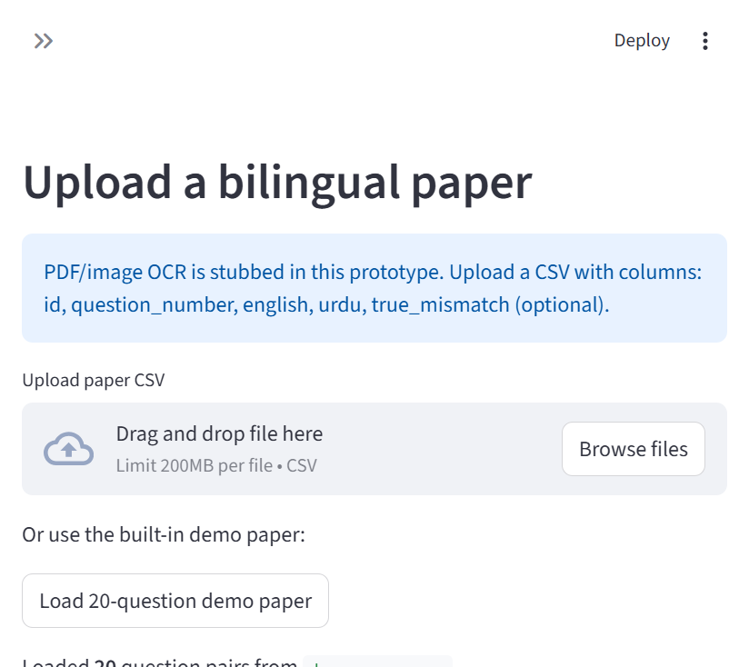

ParityLens
A prototype that spots meaning drift between English and Urdu exam questions before a paper is printed.
From problem to system.
The problem
A translated exam question can look fluent while changing a number, unit, negation, answer option, or key idea. Those mistakes need a reviewable signal rather than an automatic final judgment.
The approach
ParityLens runs deterministic checks and a lightweight semantic score on paired questions. It places suspected mismatches in a Streamlit reviewer queue, then exports a PDF QA report with accepted or rejected flags.
Load a CSV of English and Urdu questions, including the supplied demo paper.
Check numbers, units, formulas, negation, named entities, options, and semantic similarity.
Let a human inspect flags and produce a PDF quality report.

The repository calls this a prototype. Input is CSV; PDF or image OCR is still stubbed. The semantic scorer uses keyword overlap and fuzzy fallback, so the site does not claim a fully trained translation model.